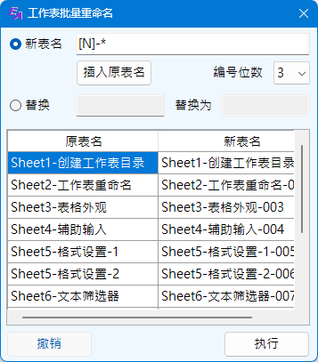
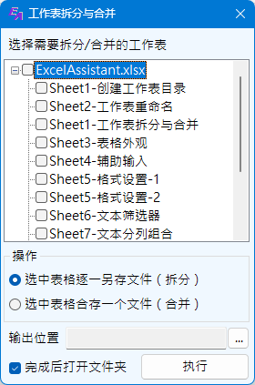

工作表操作
Excel助手Ribbon菜单中工作表操作主要包括如下功能：
功能一：批量重命名 此功能可为当前工作簿中所有的工作表进行重命名操作，调用操作界面如下：
|  |
重命名操作又分为两种模式进行操作， 模式一：设置新的表名。新表名中[N]表示引用原名称，由于包含[]非合法工作表名字符，因此不能通过键盘输入，只能点击插入原表名按钮插入该引用。输入*，程序将识别为序号，并根据当前工作表排序和指定的位数编号。 模式二： 将原表名称中的部分字符进行替换，替换支持*，?作为通配符使用。*匹配任意字符；?匹配单个字符。 替换字符中不再支持引用原表名，但是*仍可以作为序号使用。 以上两种模式的输入变化可以在下方列表中实时预览更改后的表名。选中其中的某行或者多行，单击鼠标右键可调出右键菜单，可选择重名命名该工作表或者不重名，被设定为不重名的工作表，将显示为深灰色底。 撤销按钮仅可撤销上一次的重命名操作。 |
如果需要对工作表进行排序，可以在工作表列表窗口单击右键，通过右键菜单提供的升序排序、降序排序进行。此时进行排序操作将实时进行工作表的排序，不能撤销该操作。
注意：
1. 工作表名称不可以包含* [ ] / \ ? 这些字符；
2. 重名功能不能用于由本程序生成的特定工作表，例如功能二中的工作表目录，以及列表功能中创建的隐藏数据表。
3. 本程序重名检查仅对新名称进行检查，对于偶然出现的新表名与其他原表名重名的情况下，程序会进行滞后命名处理，理论上不会出现重命名失败的情况，但是仍应尽量避免命名重复。
4. 重命名界面调出时将停止Excel与用户的互交，直至用户退出该界面。
功能二：创建工作表目录 为本工作簿中所有的工作表（包括隐藏的，但无法通过超链接转到隐藏的工作表）创建一个可链接的目录，存放在本工作簿中一个名为工作表目录的工作表。同时在单元格右键菜单中将创建一个返回目录的选项，通过此选项可返回工作表目录（如存在）。
该功能不包含任何界面，点击即生成目录。 第一次生成工作表目录或未找到名为工作表目录的工作表时，程序将用内置设置创建，内置设置较为简单。生成后的工作表目录，用户可根据自己喜好需求进行调整，例如字体样式，行高列宽以及边框颜色等。再次更新工作表目录时，直接点击工作表目录按钮即可更新，程序极大可能保留用户自身的设置，仅对工作表目录区域进行更新。
注意：
1. 程序生成的工作表名称必须由程序生成，请勿对该工作表名称进行更改； 且进行工作表目录操作或者工作表排序，本程序生成的工作表目录总会排在最前面。
2. 本程序生成的工作表目录转移到未安装本程序的电脑上使用，由目录到工作表的链接仍然生效，但通过右键菜单返回目录的功能为本程序内置功能，需安装本程序才可生效。
功能三：工作表拆分及合并 将选定的工作表（不包括括隐藏的）拆分为单个工作簿，或者合并为一个工作簿。
|  |
界面开启时，程序自动读入当前Excel打开的所有工作簿的工作表，不包括隐藏的工作表以及本程序生成的特殊表，例如工作表目录。如需要操作隐藏工作簿，需先将隐藏状态解除。本功能并不以当前打开的工作簿文件为基础，即列表中可以不包含当前工作簿或者任何当前打开的工作簿。 在工作表列表区域单击右键可以调出右键菜单，包括添加文件、删除文件、全部展开、全部折叠、全选、取消全选六个选项。添加、删除文件即添加或删除需要操作的Excel文件，删除文件时，即使当前选择为工作表，也会删除工作表所在的工作簿。展开及折叠及对工作簿节点的展开及折叠。全选时，所有的工作簿及工作表均会选中，取消全选时，同样也取消所有工作簿及工作表。 操作类型分为拆分与合并两种，当选择拆分时，所有选中的工作表，均将另存为单独的一个工作簿（Excel文件），当选择合并时，所有选中的工作表（无论是否在一个工作簿中）均将合并到一个工作簿（Excel）内。 文件路径为拆分的文件或者合并的文件存放的位置，必须指定才能执行。 |
示例一： 将工作簿中的工作表进行重名或者替换。
示例二： 生成当前工作簿的工作表目录，调整目录外观，工作表删减增加后，更新工作表目录。
示例三： 工作表拆分与合并。